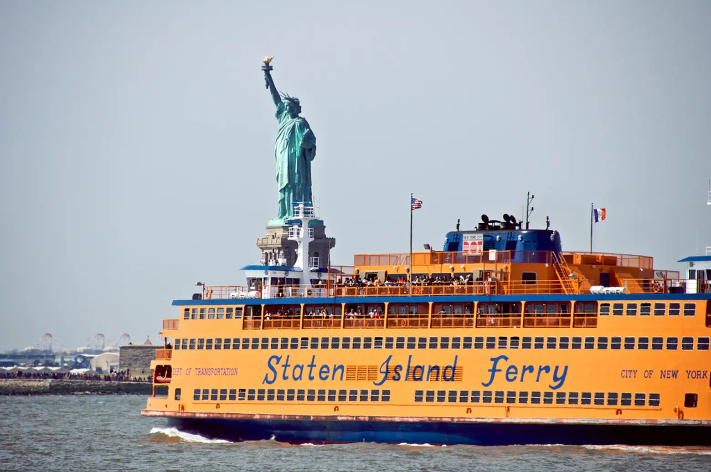
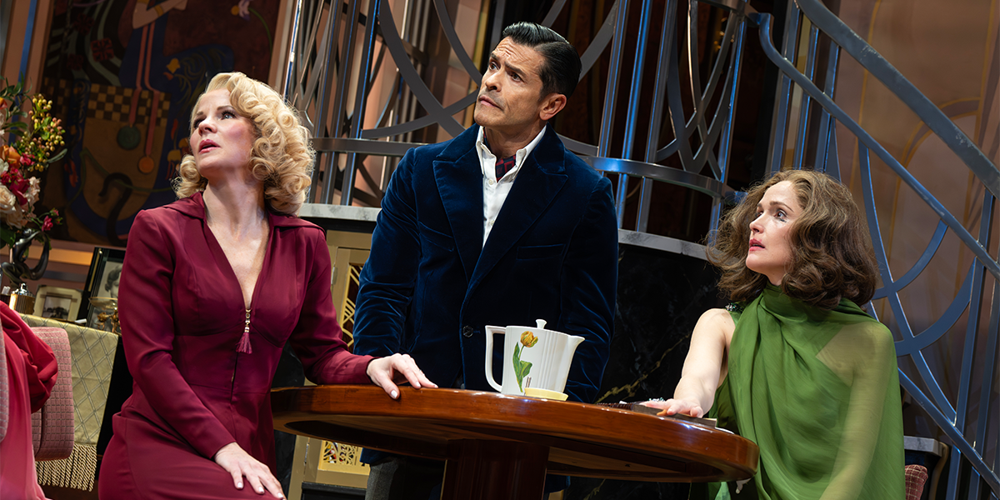
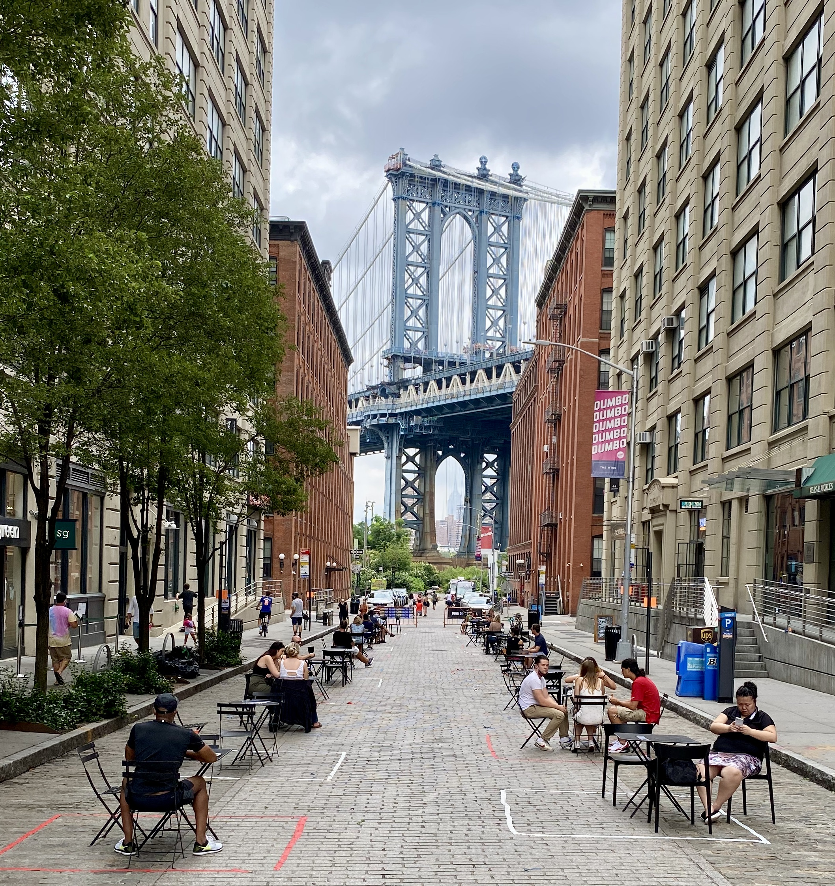

Arrive · Ferry · Broadway
Land late morning. Easy afternoon downtown. Show in the evening.
-
Cab to the hotel. Drop bags — room won't be ready until 3 PM.
Memorial Day weekend traffic is unpredictable. Build in extra time at every step today. -

Short walk south through the narrow old-NY streets. Quick photo hits along the way:
- Charging Bull — Bowling Green, foot of Broadway
- Fearless Girl — opposite the NYSE on Broad St
- Stone Street — cobblestoned, lined with old taverns
- Trinity Church — Wall & Broadway, Hamilton's grave in the churchyard
~30–40 min loop, fully walkable from the hotel.
-
-

Short walk to Whitehall Terminal. Free, ~25 min each way. Stay on the boat or hop off and catch the next return.
skyline + Lady Liberty — pure relaxed-mode
-
Check in properly, freshen up, breathe before heading to midtown.
-
-
Two solid options on the table — pick whichever fits the mood.

Dog Day Afternoon
Stage adaptation of the 1975 Pacino classic. Tense, sweaty, very NYC.

Fallen Angels
Noël Coward two-hander — sharp, witty, more cocktail-hour pace.
cab back to the hotel after the show
Bridge · Brunch · Brooklyn
Cross the bridge early, brunch in Williamsburg, eat your way through Prospect Park.
-
10-min walk to the pedestrian entrance at City Hall Park. Bridge crossing ~30–45 min with photo stops, lands you in DUMBO.
Look back over your shoulder for the iconic skyline shot. Bike lane is now separate from the wood walkway — pedestrians have it to themselves.
cross before 10:30 AM — Memorial Day crowds peak midday -

- Pebble Beach — the Manhattan Bridge + skyline photo
- Jane's Carousel — 1922 vintage carousel under glass
- Empire Stores — old warehouse shops, photo of the bridge framed in the doorway
Quick coffee or pastry pit-stop — but save real appetite for brunch.
-
Subway from York St (F) → Bedford Av (L), or Citi Bike up the waterfront. Two great calls — pick one.
-
Subway/cab back from Williamsburg to the hotel. Decompress, freshen up before dinner.
-